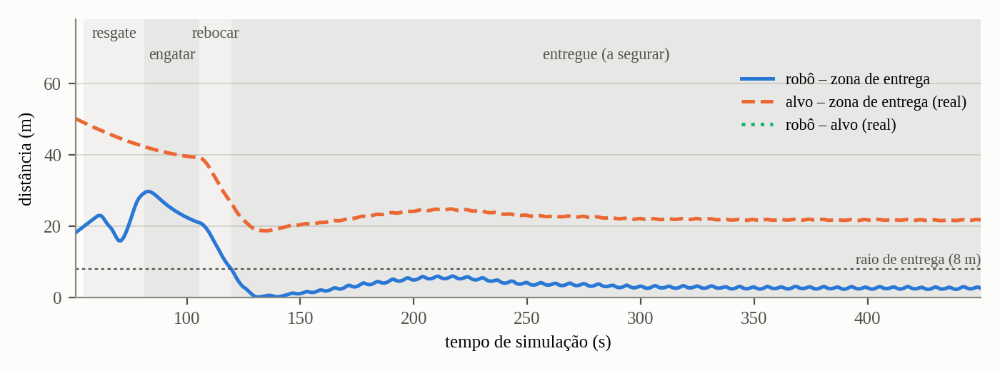

Resumo—Este trabalho apresenta um sistema multi-robô simulado para busca e salvamento no mar. Um drone procura um barco à deriva, deteta-o pela cor de um painel vermelho, estima a sua posição e deriva, e passa-o a um robô marítimo. O robô interceta o alvo, confirma a chegada e reboca-o até uma zona de entrega. O sistema foi desenvolvido em ROS 2 Galactic sobre o Gazebo Fortress e o simulador MBZIRC, em dois pacotes próprios com sete nós. Em simulação, a missão completa termina em 139 s de tempo simulado. A deteção tem um erro médio de 2,1 m e a deriva estimada é de 0,51 m/s, contra 0,50 m/s reais.
Palavras-chave—ROS 2, Gazebo, multi-robô, UAV, USV, busca e salvamento, visão por computador, interceção, reboque
Numa operação de busca e salvamento no mar, o tempo até localizar uma embarcação à deriva é decisivo. A embarcação não para: a corrente leva-a, e a última posição conhecida deixa depressa de ser útil. Os veículos aéreos não tripulados (UAV) cobrem grandes áreas e veem de cima, mas têm pouca autonomia e não conseguem intervir. Os veículos de superfície (USV) têm autonomia e força para intervir, mas são lentos e veem pouco. Combinar os dois é a motivação deste trabalho: o drone procura e indica onde o alvo está e para onde vai, e o robô marítimo vai lá e trá-lo de volta.
barco, com um painel vermelho de 8×4 m) com o drone, numa área definida, e detetá-lo pela cor.robo_maritimo, um WAM-V) até ao alvo, por perseguição ou interceção, e confirmar a chegada.A Tabela I resume os requisitos do enunciado. Os primeiros são restrições de ambiente e de processo; os restantes são funcionais.
| # | Requisito |
|---|---|
| R1 | Ambiente fixo: Ubuntu 20.04, ROS 2 Galactic, Ignition Fortress, mbzirc_ign, Python 3.8; só dependências apt |
| R2 | Não alterar a pasta da simulação (mundo, modelos, drone.yaml, oceano.launch.py, scripts) |
| R3 | Código novo em src/: pacotes missao e missao_interfaces; pontes extra só no nosso launch |
| R4 | Não adivinhar tópicos do MBZIRC: descobri-los e registá-los |
| R5 | Drone: descolar, busca em faixas com espaçamento pelo FOV e altitude, acompanhar, recuperar (espiral com deriva), regressar, aterrar |
| R6 | Regra de bateria em qualquer estado: regressar com ≤ max(15 %, necessária + 5 %) |
| R7 | Deteção HSV com duas gamas de vermelho, morfologia, maior contorno e centróide; píxel→mundo pela interseção do raio com o plano da água |
| R8 | Estimador de deriva por regressão linear numa janela, com rejeição de outliers |
| R9 | Robô marítimo: ação Resgatar com AGUARDAR, INTERCETAR (|p + v·t − b| = s·t), APROXIMAR, CONFIRMAR, ACOMPANHAR_ALVO; só por /barco_1/cmd_vel |
| R10 | Gestor da missão com hand-off e /missao/estado; registo de métricas em CSV |
| R11 | Modos perseguir/intercetar; launch com headless e modo_intercecao |
| R12 | Estilo: um nó por ficheiro, parâmetros ROS, nomes em português, ament_flake8 |
| R13 | Fase 4 (opcional): rebocar o alvo |
No código, o WAM-V que controlamos chama-se robo_maritimo e o navio à deriva barco; no Gazebo continuam a ser barco_1 e barco_2, porque a simulação não pode ser alterada. O mundo oceano_corrente (Fig. 1) tem ondas e uma corrente de 0,5 m/s em +x. A plataforma do drone está em (0, 0), com o topo a 1 m. O robô marítimo (robo_maritimo) é o WAM-V do MBZIRC (727 kg), com dois motores de 718,6 N, e parte de (15, 10). O barco_2 é o navio Vessel B (22 m, 3000 kg), que parte de (−40, −30) e deriva com a corrente. O painel vermelho está preso a ele, ~1,2 m acima da água. O drone é o quadricóptero do MBZIRC, com uma câmara HD frontal (1280×960, campo de visão horizontal de 60°), um controlador de velocidade em /drone/cmd_vel e uma bateria que se esgota em 30 min de tempo simulado. O drone não tem GPS: a pose dos robôs vem do Gazebo.
A Fig. 2 mostra os nós e as ligações principais. A missão divide-se em três máquinas de estados, uma por nó de decisão:
drone_missao): POUSADO → DESCOLAR → BUSCAR → ACOMPANHAR ⇄ RECUPERAR → REGRESSAR → ATERRAR.robo_maritimo_missao): AGUARDAR → INTERCETAR → APROXIMAR → CONFIRMAR → ACOMPANHAR_ALVO; na fase 4, ENGATAR → REBOCAR → ENTREGUE.gestor_missao): ESPERAR → BUSCA → RESGATE → HAND_OFF → REBOQUE → CONCLUIDA (ou FALHOU).O fluxo é este. O gestor manda o drone procurar. O detetor publica deteções e o estimador transforma-as em posição e deriva. Assim que há estimativa, o gestor envia a ação Resgatar ao robô. Quando o robô confirma, o gestor manda o drone regressar (hand-off) e pede a ação Rebocar. A missão termina com o drone em terra e o alvo entregue.
missao); a cinzento, o que é reutilizado. As setas laranja são as ações (missao_interfaces). O nó poses publica /<entidade>/pose_mundo para todos os nós; só algumas dessas setas estão desenhadas, e as do registo_metricas foram omitidas.Os projetos recomendados nas aulas (VRX, tutoriais marítimos e tutoriais gerais do Gazebo) serviram como referência e não foram instalados, porque pedem versões diferentes do ambiente fixo (R1). O WAM-V do robô marítimo vem, aliás, do VRX através do MBZIRC. A Tabela II mostra o que foi reutilizado.
| Package / recurso | Uso no projeto |
|---|---|
oceano_corrente (fornecido) | Mundo, modelos, corrente (corrente.py) e barco_teleop.py (cmd_vel → força); incluído pelo nosso launch |
mbzirc_ign | Drone: modelo, câmara HD, bateria, controlador de velocidade e o casco WAM-V (mbzirc_usv_base) |
ros_ign_bridge | Pontes ROS↔Gazebo: câmara, /clock (MBZIRC) e a bateria (nossa) |
| Plugins do Gazebo | DetachableJoint (barra de reboque), Hydrodynamics, Thruster |
rclpy, rclpy.action | Nós, temporizadores, ações, executor multi-thread |
std_msgs, geometry_msgs, sensor_msgs, std_srvs | Mensagens normais e o serviço /missao/iniciar |
cv_bridge, OpenCV, NumPy | Imagem → OpenCV, segmentação HSV, álgebra e regressão |
missao_interfaces (ament_cmake): as mensagens DetecaoAlvo (x, y, confiança) e EstimativaAlvo (x, y, vx, vy), a ação Resgatar (objetivo x, y; feedback distância e estado; resultado sucesso e mensagem) e a ação Rebocar (zona de entrega).
missao (ament_python): sete nós, dois módulos sem ROS (geometria.py e estimativa.py), um módulo de chamadas ao Gazebo (gazebo.py), o missao.launch.py, o ficheiro de parâmetros config/missao.yaml e 48 testes.
Pose_V em TFMessage com o child_frame_id vazio, e os nomes perdem-se. Por isso o nó lê o Gazebo com ign topic --json-output e publica /<entidade>/pose_mundo.d = Rdrone Rcâm (1, −(u−cx)/fx, −(v−cy)/fy)
P = o + t·d, t = (h − oz) / dz
e = 2·(h/tan δmin)·tan(FOV/2)·(1 − sobreposição) ≈ 91 m
Em ACOMPANHAR, o drone fica a 60 m do alvo e virado para ele. Se o perde, passa a RECUPERAR: segue uma espiral à volta de p + v·Δt, com um raio que cresce 30 m por volta, sempre virado para o centro. A regra da bateria mede o consumo real e regressa quando a carga desce a max(15 %, necessária + 5 %).
Reboque. Não se pode alterar o SDF (R2), por isso o robô cria com a simulação a correr um modelo novo, uma barra com uma articulação vertical em cada ponta. Usa para isso o serviço /world/…/create, e os dois DetachableJoint do modelo prendem as pontas aos barcos. A primeira versão, uma junta fixa direta entre os dois barcos, tornava o conjunto rígido. A diferença de força entre os motores (~1900 N·m) não chegava para vencer o momento da corrente sobre o navio, e o conjunto alinhava-se com ela como um cata-vento. Com a barra articulada, o robô consegue sempre virar. Como o barco_teleop está afinado para o WAM-V sozinho (2,5 m/s pedem só ~580 N), a rebocar o robô pede até 4 m/s, perto da força máxima de ~1440 N.
| Interface | Tipo | De → para |
|---|---|---|
/<ent.>/pose_mundo | PoseStamped | poses → todos |
/drone/slot0/image_raw | Image | MBZIRC → detetor |
/alvo/detecao | DetecaoAlvo | detetor → drone, estimativa |
/alvo/estimativa | EstimativaAlvo | estimativa → drone, robô, gestor |
/drone/comando, /drone/estado | String | gestor ⇄ drone |
/robo_maritimo/resgatar | ação Resgatar | gestor → robô |
/robo_maritimo/rebocar | ação Rebocar | gestor → robô |
/drone/cmd_vel, /barco_1/cmd_vel | Twist | drone/robô → controladores |
/model/drone/battery/… | BatteryState | ponte → drone, registo |
/missao/estado; /missao/iniciar | String; Trigger | gestor → todos; utilizador → gestor |
Todos os nós usam use_sim_time. As ações correm num MultiThreadedExecutor com um grupo reentrante, para o ciclo de execução não bloquear o controlo. Ao Gazebo só se fala por pontes ou pelo ign da linha de comandos. Os parâmetros afináveis estão no config/missao.yaml, e a secção /** partilha a zona de entrega entre nós.
Os testes foram feitos em simulação headless, isolada com IGN_PARTITION e ROS_DOMAIN_ID próprios, com um fator de tempo real de 0,5–0,9. Os tempos indicados são de simulação. As métricas vêm do CSV do registo_metricas, que compara as estimativas com a pose real do painel.
| # | Estado | Evidência |
|---|---|---|
| R1 | Cumprido | Box a partir de osrf/mbzirc (ambiente/Containerfile); só python3-opencv (apt) |
| R2 | Cumprido | Nada alterado; o reboque cria um modelo em tempo real |
| R3 | Cumprido | Dois pacotes em src/; ponte da bateria no nosso launch |
| R4 | Cumprido | Tópicos confirmados com a simulação e registados no README |
| R5 | Cumprido | 3 faixas de 91 m; deteção aos 51 s; espiral testada (B) |
| R6 | Cumprido | Limite forçado a 95 %: regressou e aterrou |
| R7 | Cumprido | Erro médio de 2,1 m (Tabela V) |
| R8 | Cumprido | 0,51 m/s estimados, contra 0,50 m/s reais |
| R9 | Cumprido | Ação com os 5 estados; confirmação aos 81 s |
| R10 | Cumprido | Hand-off e missão CONCLUIDA; CSV de métricas e eventos |
| R11 | Cumprido | Os dois modos comparados (Tabela VI) |
| R12 | Quase | 48 testes passam (flake8 e pep257 incluídos); test_copyright falha por falta de licença |
| R13 | Cumprido | Reboque e entrega (Fig. 3) |
Deteção. O painel é detetado de forma contínua a partir de ~110 m, e a primeira deteção chega a acontecer a 151 m. O erro lateral é sempre inferior a 0,6 m. O erro ao longo da linha de visão depende do plano de projeção (Tabela V): o painel está ~1,2 m acima da água e, com a câmara oblíqua, projetá-lo em z = 0 faz o alvo parecer mais longe.
| Distância ao alvo | plano z = 0 | plano z = 1,2 m |
|---|---|---|
| 40–60 m | 4,8 m | 1,6 m |
| 60–80 m | 6,3 m | 1,7 m |
| 80–100 m | 8,0 m | 2,0 m |
Deriva. O erro que varia com a distância estragava a estimativa: enquanto o drone se aproximava, ele parecia movimento do alvo. Com z = 0, o estimador dava 0,58–0,9 m/s, e depois do hand-off o robô afastava-se 18 m do alvo em 4 min. Com z = 1,2 m, a deriva estimada ficou em 0,51 m/s, o erro médio da estimativa em 1,7 m e o afastamento em 8 m em 7 min.
Interceção vs perseguição. A Tabela VI compara uma corrida completa em cada modo. Neste cenário, os dois modos quase empatam: o alvo deriva a 0,5 m/s e o robô anda a 2,5 m/s, por isso em ~25 s o alvo só anda ~12 m e o ponto de interceção fica perto da posição atual. A vantagem da interceção deve crescer com correntes mais fortes, o que fica por medir.
| intercetar | perseguir | |
|---|---|---|
| Primeira deteção | 50,9 s | 50,9 s |
| Pedido de resgate | 54,4 s | 54,4 s |
| Robô confirmado | 81,1 s | 81,5 s |
| Drone em terra | 138,9 s | 139,4 s |
| Distância mínima robô–alvo | 14,4 m | 14,5 m |
Recuperação. Com o drone em ACOMPANHAR, o detetor foi "cegado" durante 90 s. O drone passou a RECUPERAR e a espiral seguiu o centro previsto, que avançou ~42 m com a deriva, com o raio a crescer de 61 para 79 m. Quando o detetor voltou, o drone reencontrou o alvo e voltou a ACOMPANHAR.
Reboque. A Fig. 3 mostra a missão completa com reboque. O robô confirma aos 81 s, cria a barra (18,2 m) aos 105 s e chega à zona aos 120 s. A missão fica CONCLUIDA aos 139 s, quando o drone aterra. Durante o reboque, a barra manteve-se entre 18,2 e 19,3 m. Nos 330 s seguintes, a segurar o alvo, o robô ficou em média a 3,2 m da zona (no máximo 7,8 m), com o alvo atrás dele, a favor da corrente, em média a 22,3 m da zona. Com a junta fixa direta, o reboque falhou em duas de três tentativas.

O sistema faz a missão completa de forma autónoma e sem alterar a simulação fornecida: busca, deteção, acompanhamento, estimativa da deriva, interceção, confirmação, hand-off, regresso do drone e reboque até à zona de entrega. A arquitetura separa a perceção (detetor e estimador), a decisão (gestor) e o controlo (drone e robô marítimo). Os nós comunicam por tópicos e ações normais do ROS 2, e a lógica numérica está em módulos sem ROS, com testes unitários. As métricas em CSV permitiram encontrar e corrigir problemas que não se viam nos logs, como o viés da projeção e o seu efeito na deriva.
ApplyLinkWrench (exige uma ponte própria em C++), e uma câmara ou LiDAR no robô para ver o alvo durante o reboque.[1] S. Macenski, T. Foote, B. Gerkey, C. Lalancette e W. Woodall, "Robot Operating System 2: Design, architecture, and uses in the wild," Science Robotics, vol. 7, n.º 66, eabm6074, 2022.
[2] N. Koenig e A. Howard, "Design and use paradigms for Gazebo, an open-source multi-robot simulator," em Proc. IEEE/RSJ IROS, 2004, pp. 2149–2154.
[3] B. Bingham et al., "Toward maritime robotic simulation in Gazebo," em Proc. OCEANS 2019 MTS/IEEE, Seattle, 2019.
[4] T. I. Fossen, Handbook of Marine Craft Hydrodynamics and Motion Control. Chichester: Wiley, 2011.
[5] E. Galceran e M. Carreras, "A survey on coverage path planning for robotics," Robotics and Autonomous Systems, vol. 61, n.º 12, pp. 1258–1276, 2013.
[6] R. Hartley e A. Zisserman, Multiple View Geometry in Computer Vision, 2.ª ed. Cambridge University Press, 2004.
[7] G. Bradski, "The OpenCV Library," Dr. Dobb's Journal of Software Tools, 2000.
[8] Open Robotics, "MBZIRC Maritime Grand Challenge simulator." [Online]. https://github.com/osrf/mbzirc
[9] Open Robotics, "VRX: Virtual RobotX." [Online]. https://github.com/osrf/vrx
[10] Open Robotics, "Gazebo Fortress documentation e tutoriais." [Online]. https://gazebosim.org/docs/fortress
[11] Open Robotics, "ROS 2 Galactic documentation." [Online]. https://docs.ros.org/en/galactic/